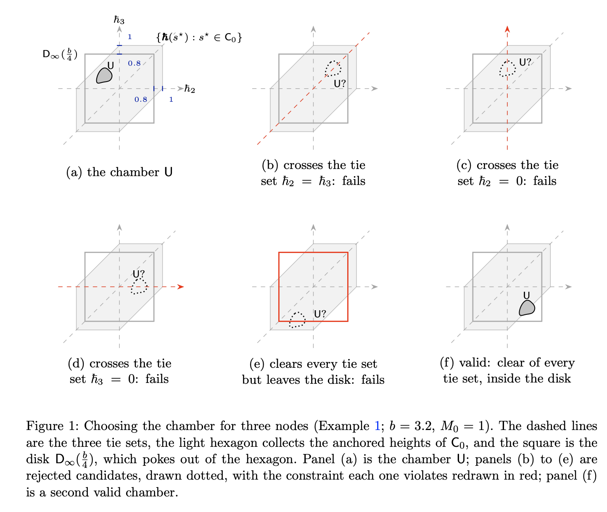

연구 ▷ HST ▷ The Petite Small Set
Standing setting. 이 글 전체에서, HST 과정은 \(n\)개의 노드 \(v_1,\ldots,v_n\)과 간선 가중치 \(w_{ij}\)를 갖는 유한 연결 가중 그래프 \(\mathcal{G}\) 위에서 돌아간다; 매 스텝의 적재량은 독립인 \(\mathrm{Unif}(0,b)\) 추출이고, walker는 약하게 더 낮은 이웃들 사이로 이동하며(간선 가중치에 비례하는 확률로 뽑힌다), 각 라운드의 flow 임계값은 \(\{n,\ldots,2n\}\)에서의 독립 균등 추출이다. 낙하는 full-support 낙하 분포 \(\boldsymbol{\mu}_0\)에서 뽑히며; \(X_t\)는 walker, \(t_r\)은 \(r\)번째 낙하 시각이다. 상태 \(s\)는 노드 높이들과 walker의 노드를 기록한다. walker가 하는 모든 비교는 높이 차이만 읽으며, 모든 높이에 공통 상수를 더해도 동역학은 바뀌지 않는다; 따라서 상태의 높이 정보는 그 차이들이 담고 있으며, 이는 \(v_1\)-앵커 높이 \(\boldsymbol{\hbar}(s) := (h(v_2)-h(v_1),\ldots,h(v_n)-h(v_1)) \in \mathbb{R}^{n-1}\)로 기록된다. \(M(s)\)는 높이 범위, \(S^{\star}_r := S_{t_r}\)은 낙하 시각에 읽은 round skeleton으로 \(\mathsf{S}^{\star} = \mathbb{R}^{n-1}\times\mathsf{V}\)(앵커 높이, walker 노드)에 값을 가지며(\(\mathsf{V}\)는 노드 집합), \(P^{\star}\)은 그 전이 커널이다. ergodic 논증의 가설 (H2)는 고정 임계값 \(M_0\)의 준위집합 \(\mathsf{C}_0 := \{s^{\star} : M(s^{\star}) \leq M_0\}\)에 관한 것이다.
이제 가설 (H2)를 공급하는 Doeblin minorisation을 구성한다: 준위집합 \(\mathsf{C}_0 = \{s^{\star} : M(s^{\star}) \leq M_0\}\)이 small, 따라서 petite임을 보인다. 먼저 petite set의 개념을 상기한다. 이 글 전체에서, 가측 집합 \(\mathsf{A}\)에 대해 \(P^m(s, \mathsf{A}) := \mathbb{P}_s(S_m \in \mathsf{A})\)는 \(m\)-스텝 전이확률이고, \(P^m(s, \cdot)\)은 상태공간 위의 대응하는 법칙이며, 열린 슬롯 “\(\cdot\)”은 측도로 읽는다.
정의 1 (Small and petite sets; cf. [1, §5.2, §5.5]). \(\{Y_t\}\)를 상태공간 \(\mathsf{Y}\) 위의 Markov chain이라 하고, \(m\)-스텝 전이확률을 \(P^m\)이라 하자. 집합 \(\mathsf{C}\subseteq\mathsf{Y}\)가 small이라 함은, 어떤 \(m\geq 1\)과 비영 측도 \(\nu\)가 존재하여 모든 \(y\in\mathsf{C}\)에 대해 균등 minorization \(P^m(y,\cdot)\geq\nu(\cdot)\)이 성립하는 것이다: \(\mathsf{C}\) 안 어디에서 출발하든, \(m\) 스텝 뒤 chain은 공통 “floor” 분포 \(\nu\)를 가진다. 표본 커널 \(\sum_{m\geq 1} a(m) P^m(y,\cdot)\geq\nu(\cdot)\) (\(\{a(m)\}\)은 확률 가중치)에 대해 같은 것이 성립하면 petite이라 한다; 모든 small set은 petite이다.
\(\mathsf{C}_0\)이 \((P^{\star})^m\)에 대해 small이라 함은 다음을 뜻한다: HST 과정을 몇 개를 돌리든, 그리고 각각이 \(\mathsf{C}_0\) 안 어디에서 출발하든, 정확히 \(m\) 라운드 뒤에 그들 모두가 하나의 목표집합 위에 공통 밀도 floor로 쌓인다. \(\mathsf{S}^{\star} = \mathbb{R}^{n-1}\times\mathsf{V}\)이므로, 이 목표를 곱, 즉 높이차 집합 곱하기 노드 집합으로 택할 수 있다; 노드 좌표를 \(v_n\)에 고정하면, 고를 것으로 남는 것은 목표의 높이차 부분이다: 이를 \(\mathsf{U}\subset\mathbb{R}^{n-1}\)이라 부르며, 공통 밀도 floor를 담을 집합이다. 따라서 \(\mathsf{U}\), 스텝 수 \(m\), 그리고 floor \(\eta>0\)을 다음을 만족하도록 구성하면 충분하다 \[ (P^{\star})^m(s^{\star},\cdot) \;\geq\; \eta\,\mathrm{Unif}(\mathsf{U})\otimes\delta_{v_n} \qquad (s^{\star}\in\mathsf{C}_0), \] 즉: \(m\) 라운드 뒤, walker는 \(v_n\)에 앉아 있고 높이차는 \(\mathsf{U}\) 안에 놓인다.
Smallness는 \(\mathsf{U}\)에 양의 Lebesgue 측도 외에는 아무 제약도 두지 않는다; 편의를 위해 \(\mathsf{U}\)를 (i) \(0\) 근처, 그리고 (ii) 하나의 순서 chamber 안으로 잡는데, 이는 \(\mathsf{U}\) 전체에서 노드 높이들이 한 가지 고정된 순서를 유지함을 뜻한다: \(0\) 근처이되, ties로부터는 떨어져서.
정의 2 (the chamber). 반지름 \(R\)의 열린 \(\ell^\infty\)-disk를 \(\mathsf{D}_\infty(R) := \{\mathbf{d}\in\mathbb{R}^{n-1} : \|\mathbf{d}\|_\infty < R\}\)로 쓴다. 여기서 공간 \(\mathbb{R}^{n-1}\)은 앵커 높이들의 공간이다: 그 좌표는 \(\hbar_2,\ldots,\hbar_n\)으로 쓰며, \(\hbar_i\)는 \(v_1\) 위로 잰 \(v_i\)의 높이이고, 앵커링에 의해 \(\hbar_1:=0\)이다. 그것의 한 점 \(\mathbf{u}\)는 이 축들에서 좌표 \(u_2,\ldots,u_n\)을 갖는다. chamber \(\mathsf{U}\)는 양의 Lebesgue 측도를 갖는 임의의 콤팩트 집합 \[ \mathsf{U} \subset \mathsf{D}_\infty(\tfrac{b}{4}), \] 으로, 그 위에서 노드 높이들이 한 가지 고정된 strict order를 유지한다; 특히 \(\mathsf{U}\)는 tie 집합 \(\{\mathbf{u} : u_i = u_j\}\) (\(i\neq j\))와 서로소이다.
비고 1 (the constants of the chamber). 정의 2의 두 선택은 나중에 지킬 약속이다. 파라미터 \(b\)는 한 스텝이 쌓는 눈의 상한이다; 반지름이 왜 그것의 4분의 1인지는 보조정리 8과 6에서 분명해지는데, 거기서 \(n\)개의 낙하(각 노드에 하나씩)가 바로 그런 disk를 밀도 floor로 정확히 덮음을 보인다. chamber가 왜 원점 근처, 그리고 하나의 strict order 안(ties로부터 떨어져)에 있는지는 보조정리 12에서 분명해지는데, 거기서 landing point에서 살아남는 gap들이 그 tie 값들로부터 고정된 여유만큼 떨어지도록 pin된다.
예제 1 (the chamber for three nodes). \(n=3\), \(b=3.2\), \(M_0=1\)이라 하면, 앵커 높이들은 좌표 \(\hbar_2\)와 \(\hbar_3\)—\(v_1\) 위로 잰 \(v_2\)와 \(v_3\)의 높이—를 갖는 평면에 산다 (앵커링에 의해 \(\hbar_1=0\)). 그림 1은 이 평면을 여섯 번 그리며, 모든 panel은 동일한 세 개의 고정된 특징을 담는다. 점선들은 세 tie 집합 \(\hbar_2=0\), \(\hbar_3=0\), \(\hbar_2=\hbar_3\)으로, 각각 두 노드가 같은 높이가 되는 자취이다; 이들은 평면을 여섯 개의 순서 chamber로 자르는데, 세 노드의 각 strict ranking마다 하나씩이며, 따라서 tie 집합을 가로지르면 ranking에서 두 노드가 뒤바뀐다. 밝은 육각형 \(\{\mathbf{u} : \max(0,\hbar_2,\hbar_3) - \min(0,\hbar_2,\hbar_3) \leq M_0=1\}\)은 시작점들의, 즉 \(\mathsf{C}_0\)의 상태들의 앵커 높이를 모은다; 시작점은 그 안 어디에든, 여섯 ranking 중 어느 것으로든 있을 수 있다. 정사각형은 disk \(\mathsf{D}_\infty(\tfrac{b}{4})=\mathsf{D}_\infty(0.8)\)이고, 육각형 밖으로 삐져나온다: 어느 영역도 다른 것을 포함하지 않으며, 정의 2는 어떤 포함관계도 요구하지 않는다.

chamber \(\mathsf{U}\)로는 panel (a)의 solid blob을 택한다. 그것은 양의 넓이를 갖는 콤팩트 집합이고, disk 안에 있으며, ranking \(v_3\) 위 \(v_1\) 위 \(v_2\)의 chamber 안에 앉아 있어(\(\hbar_3 > 0 > \hbar_2\) 전역에서), 그 위에서는 어떤 비교도 결코 tie가 되지 않는다. 다른 ranking의 시작점은 도중에 tie 집합을 가로지를 수 있는 변위에 의해 \(\mathsf{U}\) 안으로 옮겨진다; landing set만이 그들로부터 떨어져 있으면 된다.
두 제약이 왜 문제가 되는지는 기각된 후보들에서 가장 빠르게 보이며, panel (b)~(e)가 이들을 점선 윤곽으로 그린다. panel (b), (c), (d)는 각각 하나의 tie 집합을 가로지르는데, 하나면 기각에 충분하다: \(\hbar_2 = \hbar_3\)을 가로지르면 후보 안에서 \(v_2\)와 \(v_3\)의 ranking이 뒤집히고, \(\hbar_2 = 0\)을 가로지르면 \(v_2\)가 \(v_1\)에 대해, \(\hbar_3 = 0\)을 가로지르면 \(v_3\)가 \(v_1\)에 대해 뒤집힌다. panel (e)의 후보는 모든 tie 집합을 벗어나지만 disk를 벗어나며, 육각형 안에 있다고 해서 구제되지 않는다. 넷 각각에서 위반된 제약이 빨강으로 다시 그려지는데, (b), (c), (d)에서는 tie 집합이, (e)에서는 disk가 그렇다.
panel (f)는 두 조건을 긍정적으로 다시 서술한다: 유효한 chamber는 모든 tie 집합을 피하고 disk 안에 머무르며, 그 밖으로는 자신의 chamber와 모양에서 자유롭다—그래서 panel (f)는 panel (a)와 다른 chamber, 다른 모양을 쓴다. 그것은 육각형을 벗어나도 되며, panel (f)의 chamber가 그렇게 한다. 육각형은 시작점이 앉을 수 있는 곳을 모은 것이지 landing set이 앉아야 하는 곳이 아니므로, 그 밖으로 삐져나오는 것은 위반이 아니다: 정의 2의 두 조건은 tie 집합과 disk이며, 그 외에는 없다.
무엇을 보여야 하는지 되짚어 보자. Smallness는 \(m\) 라운드 뒤의 과정에 두 가지를 요구한다: walker가 \(v_n\)에 앉아 있을 것, 그리고 높이차가 \(\mathsf{U}\)에 있을 것. 둘 중 첫째는 값싸다. 매 라운드 시작마다 낙하가 일어나는데, 낙하는 모든 노드가 양의 확률로 가능하다; 따라서 우리는 마지막에 \(v_n\)에서 낙하가 일어나며 끝나도록 택할 수 있다. 우리는 그것을 cycle로 처방한다. 한 cycle은 \(n\)번의 낙하가 차례로 \(v_1,\ldots,v_n\)에 착지하는 한 번의 sweep이고, 우리는 \(m=nL\) 라운드, 즉 \(L\) cycle을 취해, 마지막 낙하가 \(v_n\)에 착지하고 각 노드가 정확히 \(L\)번의 낙하를 받도록 한다. 이 \(m\) 라운드가 window이다.
다시한버 정리하면, smallness는 \(m\) 라운드 뒤 1. walker는 \(v_n\)에 앉아 있고 2. 높이차는 \(\mathsf{U}\) 안에 놓일 것을 요구한다. 이중에 walker가 \(v_n\) 에 앉아 있음은 매우 쉽게 달성할 수 있다. - 싸이클 - Window의 개념 도임
이제 높이차를 U에 놓을것을 생각해보자. 이는 \(\boldsymbol{\hbar}(s^{\star})\)를 u에 옮기는것을 의미한다. (예제추가, 구체적숫자와) 예제 s^셋팅, U셋팅, u-pick 1. 하나의 가능성은 — 이다. 2. 또 하나의 가능성은 — 이다. 이러한 가능성들은 밀도하한을 이룬다. 임의의 u에 대해서 이러한 밀도하한을 이룸을 보이면된다. 예제끝
예제에서 보듯이 옮겨짐을 위해서는 눈이 적절한 시나리오로 쌓여야 가능하다.
아직까지 어떤 높이도 움직이지 않았다. 시작점 \(s^{\star}\in\mathsf{C}_0\)은 앵커 높이 \(\boldsymbol{\hbar}(s^{\star})\)에, 육각형 안 어딘가에 그것이 우연히 갖는 어떤 ranking으로든 앉아 있고, 목표 \(\mathbf{u}\)는 \(\mathsf{U}\)에 앉아 있다; 둘은 \(\mathbb{R}^{n-1}\)의 서로 다른 점이며, 한쪽을 다른 쪽으로 옮길 수 있는 유일한 것은 눈이다. 스텝 \(t\)가 떨어뜨리는, walker의 노드 \(X_t\)에 착지하는 적재량을 \(b_t\)로 쓰고, 그 적재량을 앵커 항으로 읽은 것을 \(\boldsymbol{\bar{b}}_t\in\mathbb{R}^{n-1}\)로 쓴다: 그 \(v_i\)-성분은 스텝이 \(v_i\)에 착지할 때 \(+b_t\), \(v_1\)에 착지할 때 \(-b_t\), 그 외에는 \(0\)이다. 시작점은 낙하에서 읽히고, 그 자신의 적재량은 이미 \(\boldsymbol{\hbar}(s^{\star})\)에 세어져 있으며, \(m\) 라운드 뒤 과정은 그 이후 \(m\)번째 낙하에서 읽힌다. 그 사이의 모든 스텝은 그러한 앵커 적재량을 하나씩 기여하며, 그것들이 누적된다: \[ \mathbf{u} \;=\; \boldsymbol{\hbar}(s^{\star}) \;+\; \sum_{t} \boldsymbol{\bar{b}}_t . \] 좌표별로 이것은 다음과 같이 읽힌다 \[ u_i \;=\; \hbar(v_i,s^{\star}) \;+\; \sum_{t\,:\,X_t=v_i} b_t \;-\; \sum_{t\,:\,X_t=v_1} b_t \qquad (2\leq i\leq n) : \] 이 스텝들이 \(v_1\)의 높이 위로 \(v_i\)의 높이에 더하는 것은, 그들이 \(v_i\)에 떨어뜨리는 눈이 \(v_1\)에 떨어뜨리는 눈을 초과하는 분량이다.
예제 2 (landing a target). 예제 1의 \(n=3\), \(b=3.2\), \(M_0=1\)을 이어받아, 한 cycle \(L=1\)을 취하면 window는 세 번의 낙하를 담으며, 이들은 낙하 시각 \(t_1, t_2, t_3\)에 \(v_1, v_2, v_3\)에 그 순서로 착지한다. 잠시 낙하들 사이의 스텝들이 아무것도 떨어뜨리지 않는다고 하자, 그러면 세 낙하만으로 높이가 움직인다.
이 뒤로 이어지는 모든 것은 이 하나의 합을 정교화한다. 스텝들은 라운드로 묶이므로 합은 라운드별로 쪼개지고, 한 라운드 안에서 스텝은 두 종류로 나오므로 각 라운드의 몫은 한 번 더 쪼개진다. 논증을 결정하는 것은 바로 이 두 번째 분할인데, 두 종류가 서로 반대 방향으로 조종되기 때문이다.
스켈레톤은 한 번에 하나의 increment씩 전진하는데, increment는 처음 떠올리는 것과 달리 라운드가 아니다. 스켈레톤 상태 \(S^{\star}_j\)는 낙하 시각 \(t_j\)에, 그 낙하가 착지한 직후에 읽히므로, 그림을 여는 낙하는 우리가 출발하는 상태에 이미 실려 있다. 그러면 커널이 지나는 것은 반열린 구간 \((t_{j-1}, t_j]\)이다: 먼저 앞선 낙하에 뒤따르는 non-fall 스텝들, \(\Gamma_{j-1}\)로 쓰며, 그다음 구간을 닫고 \(S^{\star}_j\)로 읽히는 낙하 \(F_j\)이다.
이 스텝들이 떨어뜨리는 적재량은 standing setting의 적재량 \(b_t\)이며, 전반에 걸쳐 쓰이는 두 표식으로 다시 라벨링된 것이다. 닫는 낙하 \(F_j\)는 sharp로 표시된 적재량 \(b^{\sharp}_j := b_{t_j}\), 즉 \(j\)번째 낙하 시각의 적재량을 떨어뜨린다; 세그먼트 \(\Gamma_{j-1}\)의 모든 스텝은 non-fall 스텝으로, walker가 block되거나 threshold \(\Theta_{j-1}\)가 발화할 때까지 내리막으로 흐르며, 그러한 각 스텝은 flat으로 표시된 적재량 \(b^{\flat}\), 다시 그 스텝의 \(b_t\)를 떨어뜨린다. 전체 윈도우 — \(m = nL\)인 \(\Gamma_0, F_1, \Gamma_1, F_2, \ldots, \Gamma_{m-1}, F_m\) — 에 걸쳐, sharp 적재량들은 \(\mathbf{b}^{\sharp}\)로 모이며 increment당 한 좌표씩이고, flat 적재량들은 \(\mathbf{b}^{\flat}\)로 모인다. 이 라벨링이 안고 있는 offset에 주의하라: increment \(j\)는 세그먼트 \(\Gamma_{j-1}\)을 모으는데, 이는 그 닫는 적재량 \(b^{\sharp}_j\)보다 앞선다. 두 쪽은 이후에서 서로 반대 역할을 한다: sharp 쪽은 시나리오가 조종하는 곳이고, flat 쪽은 그것이 살아남아야 하는 것이다. 그림 2가 그 해부 구조를 보여준다.
무엇을 보여야 하는지 되짚어 보자. Smallness는 \(m\) 라운드 뒤의 과정에 두 가지를 요구한다: walker가 \(v_n\)에 앉아 있을 것, 그리고 높이차가 \(\mathsf{U}\)에 있을 것. 둘 중 첫째는 값싸다. 낙하는 full-support \(\boldsymbol{\mu}_0\)에서 뽑히므로, 매 낙하마다 모든 노드가 양의 확률로 가능하다; 따라서 우리는 낙하 표적들의 전체 수열을 처방하고, 그 처방에 대한 확률을 지불하며, 그것이 \(v_n\)에서 끝나도록 택할 수 있다.
보조정리 14 (robust core는 질량을 유지한다). 정의 7과 8 아래에서, 모든 \(\boldsymbol{\hbar}^{\sharp}\in\mathbb{R}^{n-1}\), 상태 \(s^{\star}\), 그리고 \(\delta>0\)에 대해 tie들과 경계는 \(O(\delta)\)의 비용을 갖는다: graph-data 상수 \(C_{\mathrm{tie}}, C_{\mathrm{bdry}}<\infty\)가 존재하여 \[ \Bigl|\Bigl\{\mathbf{z}^{\sharp} : \mathbf{b}^{\sharp}\in[0,b]^{nL},\ \min_{(i,j,r)\ \text{nondeg.}}\bigl|\hbar(v_i,t_r)-\hbar(v_j,t_r)\bigr|\leq\delta\Bigr\}\Bigr|_{\mathrm{Leb}}\leq C_{\mathrm{tie}}\,\delta \] 과 \[ \bigl|\bigl\{\mathbf{z}^{\sharp} : \mathbf{b}^{\sharp}\in[0,b]^{nL},\ \textstyle\min_j b^{\sharp}_j\leq\delta\ \text{or}\ \min_j(b-b^{\sharp}_j)\leq\delta\bigr\}\bigr|_{\mathrm{Leb}}\leq C_{\mathrm{bdry}}\,\delta \] 이 성립하며; 나아가 \((C_{\mathrm{tie}}+C_{\mathrm{bdry}})\,\delta\leq m_0/2\)이고 \(\delta\leq c_{\mathsf{U}}\)이면, robust core \[ \mathsf{R}_\delta(s^{\star}) := \{\delta\leq b^{\sharp}_j\leq b-\delta\ \forall j\}\cap\Bigl\{\min_{(i,j,r)\ \text{nondeg.}}\bigl|\hbar(v_i,t_r)-\hbar(v_j,t_r)\bigr|\geq\delta\Bigr\} \subseteq [0,b]^{nL} \] 는 질량 floor를 유지한다: \[ \bigl|\{\mathbf{z}^{\sharp} : (\mathbf{A}^{\sharp})^{\dagger}\mathbf{k}+\mathbf{Z}^{\sharp}\mathbf{z}^{\sharp}\in\mathsf{R}_\delta(s^{\star})\}\bigr|_{\mathrm{Leb}}\geq m_* := m_0/2 \qquad \forall\,\mathbf{k}\in\mathsf{K},\ s^{\star}\in \mathsf{C}_0 . \]
증명. fiber를 \(\boldsymbol{\hbar}^{\sharp}\) 위에서 \(\mathbf{b}^{\sharp}(\mathbf{z}^{\sharp}) := (\mathbf{A}^{\sharp})^{\dagger}\boldsymbol{\hbar}^{\sharp}+\mathbf{Z}^{\sharp}\mathbf{z}^{\sharp}\)로 매개화하고, statement에 제시된 tie 집합과 경계 집합을 각각 \(\mathsf{T}_\delta\)와 \(\mathsf{B}_\delta\)로 쓴다. 목표는 질량 floor \[ \bigl|\{\mathbf{z}^{\sharp} : \mathbf{b}^{\sharp}(\mathbf{z}^{\sharp})\in\mathsf{R}_\delta(s^{\star})\}\bigr|_{\mathrm{Leb}}\geq m_0/2 \qquad \forall\,\mathbf{k}\in\mathsf{K},\ s^{\star}\in\mathsf{C}_0, \] 이며, 이를 위해서는 statement의 두 bound를 증명하면 충분하다. 실제로 core는 cube의 slice에서 \(\mathsf{T}_\delta\)와 \(\mathsf{B}_\delta\) 너머로는 아무것도 잘라내지 않는데, 이는 fall 좌표를 포함하지 않는 fall-free gap(보조정리 13(I))과 equality로부터 \(c_{\mathsf{U}}\geq\delta\)만큼 떨어져 머무는 final-equality gap(보조정리 13(II)) 때문이다; 그리하여 \(\boldsymbol{\hbar}^{\sharp}=\mathbf{k}\)에서 \[ \begin{aligned} \bigl|\{\mathbf{z}^{\sharp} : \mathbf{b}^{\sharp}(\mathbf{z}^{\sharp})\in\mathsf{R}_\delta(s^{\star})\}\bigr|_{\mathrm{Leb}} &\geq m_0 - |\mathsf{T}_\delta|_{\mathrm{Leb}} - |\mathsf{B}_\delta|_{\mathrm{Leb}} \quad(\because\ \text{보조정리 12; subadditivity}) \\ &\geq m_0 - (C_{\mathrm{tie}}+C_{\mathrm{bdry}})\,\delta \quad(\because\ \text{두 bound}) \\ &\geq m_0/2 \quad(\because\ (C_{\mathrm{tie}}+C_{\mathrm{bdry}})\,\delta\leq m_0/2). \end{aligned} \] \(\square\)